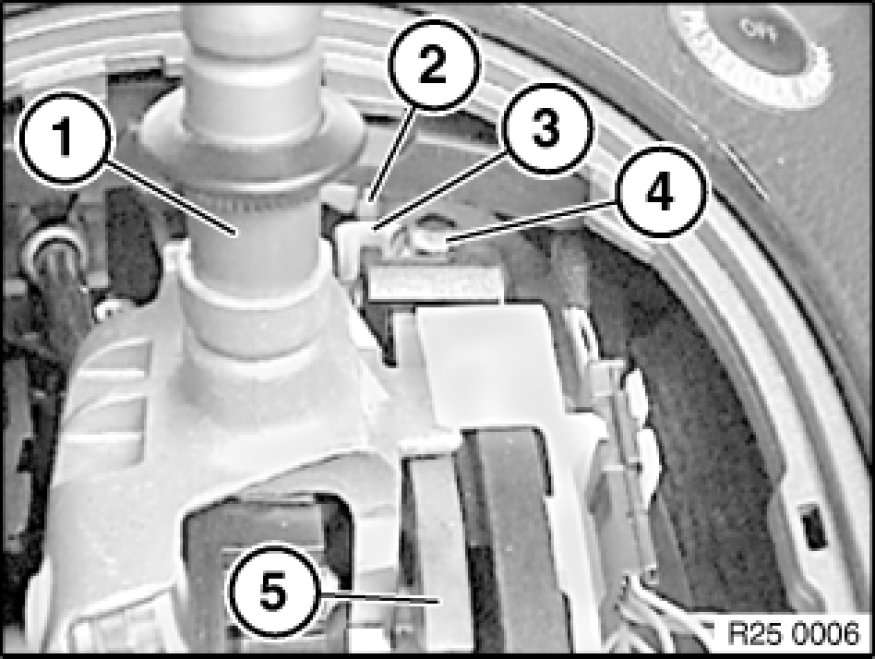

Shift Interlock Cable: Adjustments
25 16 175 - Adjusting interlock cable

Necessary preliminary tasks:
- Remove function carrier 51 45 106 - Removing and installing/replacing function carrier on instrument panel trim on trim for instrument panel.

Move selector lever (1) to "P" position (front stop of shifting gate).
Loosen screw (4).
Tightening torque 25 16 5AZ [1][2]Shifter A/T.
It must be possible to move cable (2) slightly in holder (3).
Move ignition key to "zero" position and remove.
Press interlock locking pawl (5) downwards as far as it will go.
Tighten screw (4).
Note:
Check adjustment of Interlock:
- Turn ignition key to "ignition" position and then back to "zero" position.
- Interlock locking pawl (1) must rest (3) on contact face in shift tower (2).
- If necessary, adjust interlock cable again.